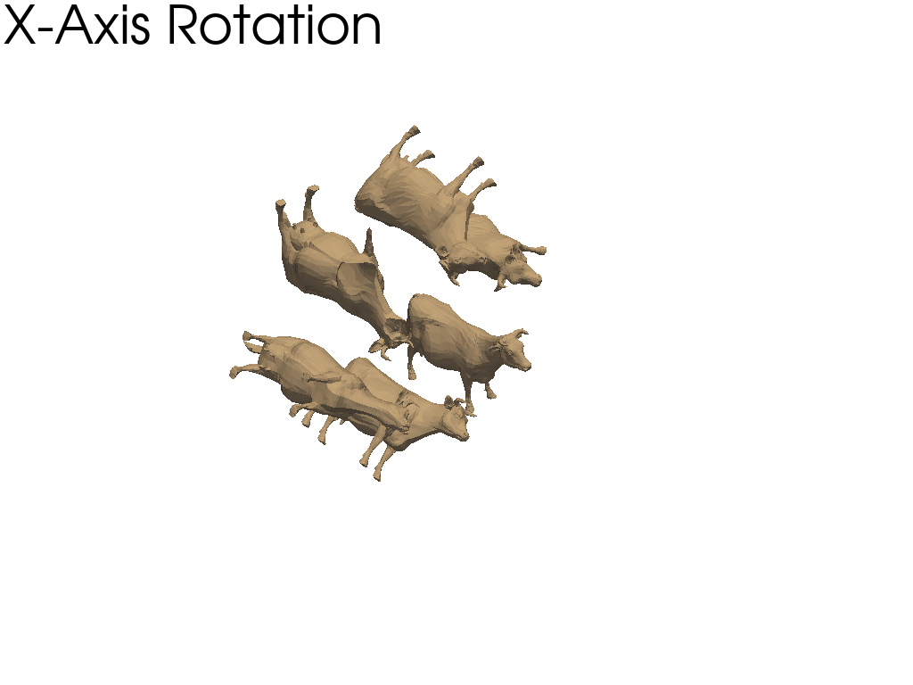
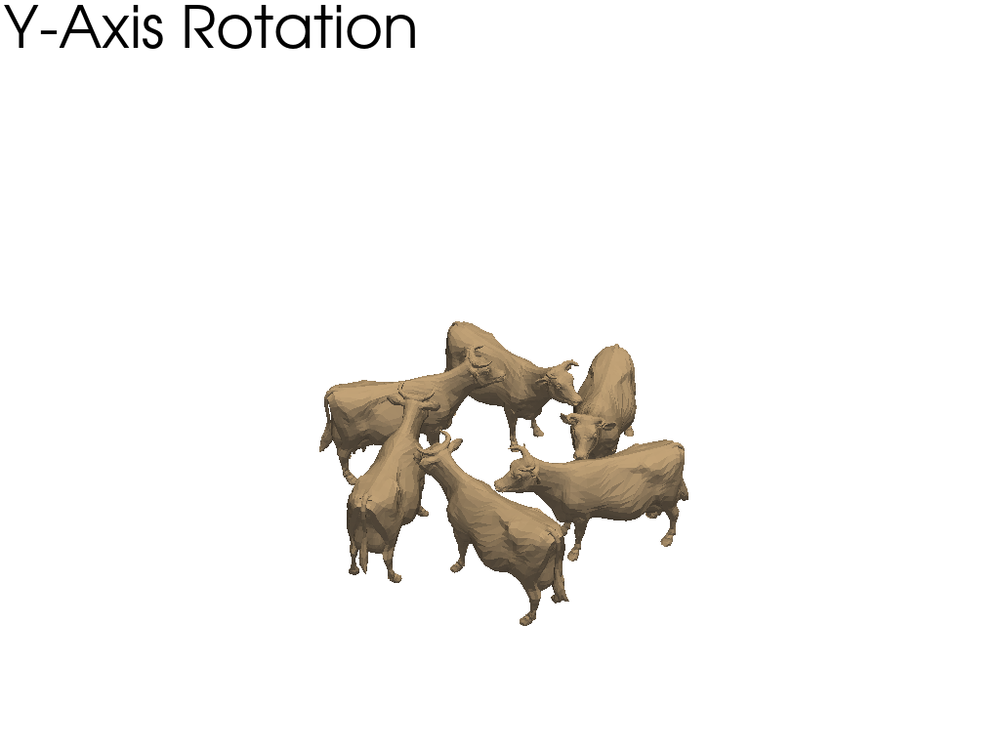
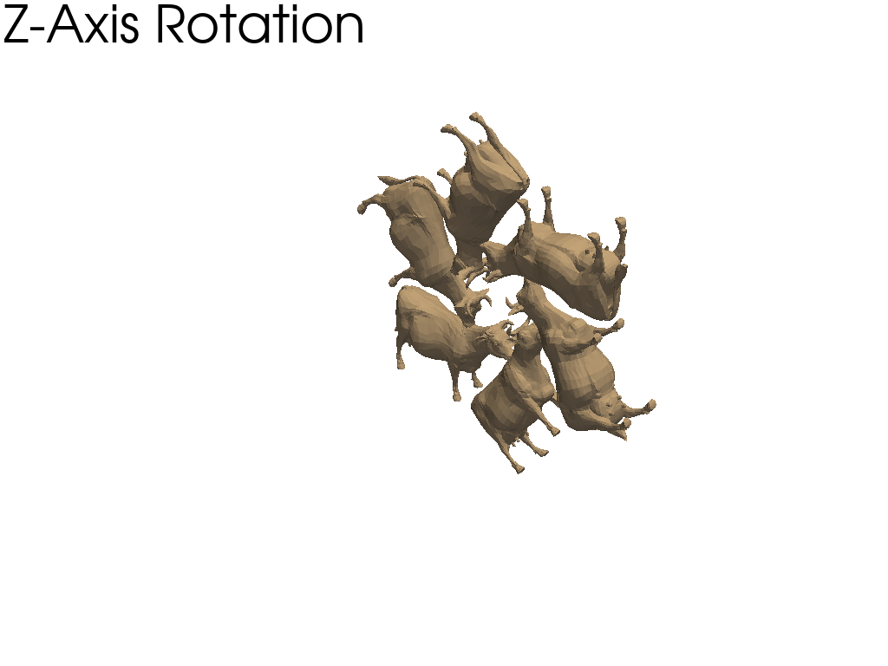

Note
Click here to download the full example code
Rotations#
Rotations of a mesh about its axes. In this model, the x axis is from the left to right; the y axis is from bottom to top; and the z axis emerges from the image. The camera location is the same in all four images.
import pyvista as pv
from pyvista import examples
Define camera and axes#
Define camera and axes. Setting axes origin to (3.0, 3.0, 3.0).
mesh = examples.download_cow()
mesh.points /= 1.5 # scale the mesh
camera = pv.Camera()
camera.position = (30.0, 30.0, 30.0)
camera.focal_point = (5.0, 5.0, 5.0)
axes = pv.Axes(show_actor=True, actor_scale=2.0, line_width=5)
axes.origin = (3.0, 3.0, 3.0)
Original Mesh#
Plot original mesh. Add axes actor to Plotter.
p = pv.Plotter()
p.add_text("Mesh", font_size=24)
p.add_actor(axes.actor)
p.camera = camera
p.add_mesh(mesh)
p.show()
Rotation about the x axis#
Plot the mesh rotated about the x axis every 60 degrees. Add the axes actor to the Plotter and set the axes origin to the point of rotation.
Rotation about the y axis#
Plot the mesh rotated about the y axis every 60 degrees. Add the axes actor to the Plotter and set the axes origin to the point of rotation.
Rotation about the z axis#
Plot the mesh rotated about the z axis every 60 degrees. Add axes actor to the Plotter and set the axes origin to the point of rotation.
Rotation about a custom vector#
Plot the mesh rotated about a custom vector every 60 degrees. Add the axes actor to the Plotter and set axes origin to the point of rotation.
C:\Users\afernand\Documents\repositories\pyvista\.venv\lib\site-packages\pyvista\core\pointset.py:336: PyVistaDeprecationWarning: You did not specify a value for `inplace` and the default value will be changing to `False` in future versions for point-based meshes (e.g., `PolyData`). Please make sure you are not assuming this to be an inplace operation.
warnings.warn(DEFAULT_INPLACE_WARNING, PyVistaDeprecationWarning)
Total running time of the script: ( 0 minutes 0.877 seconds)